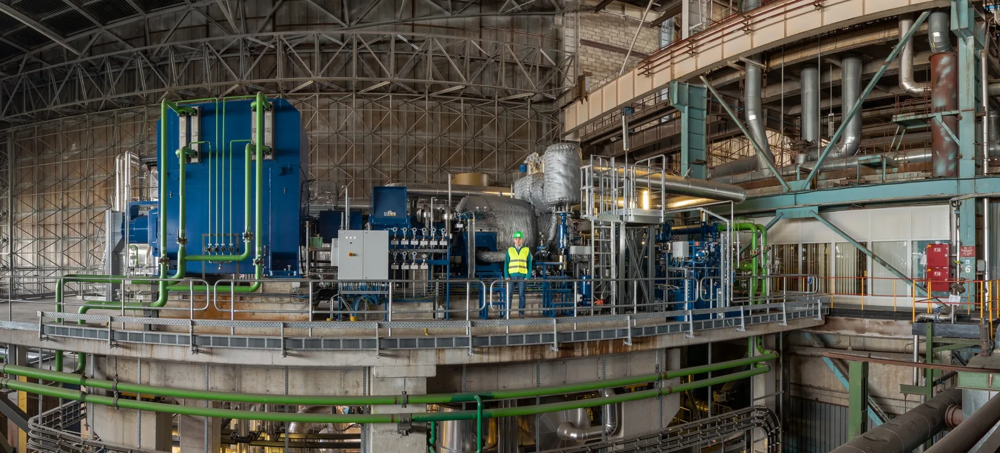
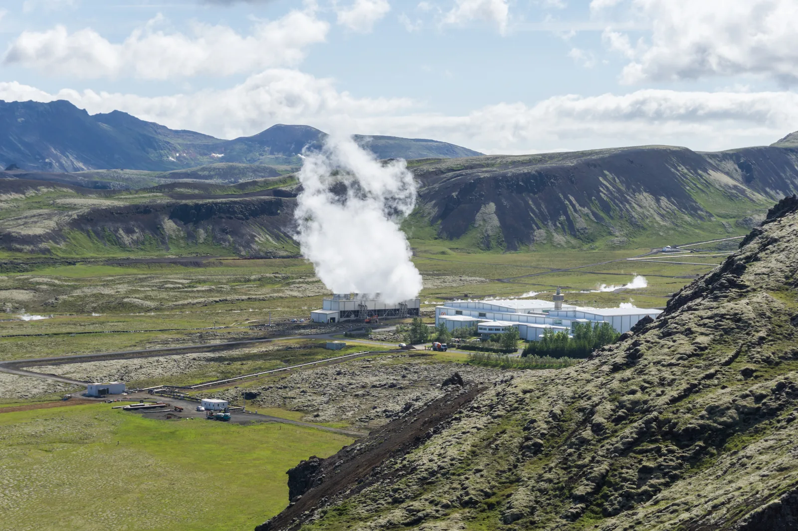

Energy production and the efficiency of power plants
Why does a thermal power plant need about $2.5$ times as much fuel energy as the electrical energy it produces, and how could the rest of the energy be put to use?
Prior knowledge
- Efficiency $\eta = W/Q_1$ and the energy balance of a heat engine $Q_1 = W + Q_2$chapter Work done by a gas and the heat engine
- Quantity of heat $Q = cm\,\Delta T$ and specific heat capacitychapter Heating and cooling of a substance: $Q = cm\Delta T$
- Power is energy per unit time, and energy is conservedchapter Work and energy
Core path: follow the steps in order. Besides calculations, the core path includes investigations, explanations and graphs. Tasks marked Optional give extra practice. Optional tasks: 6.
Think about it
The fuel power of a condensing power plant is $500\,\text{MW}$, but only $200\,\text{MW}$ goes to the electricity grid. Energy is still conserved: it cannot disappear anywhere. At the same time the cooling water leaving the condenser of the plant is clearly warmer than the sea water coming in.
In which step of the energy chain does the most energy of the fuel end up as something other than electricity, and could it be put to use?
Optional Review from earlier lessons
Predict
Make your predictions before investigating 2 questions
Prediction 1: in which step is the most energy lost?
Prediction 2: what happens to electricity in combined heat and power production?
Investigate
Follow the power along the energy chain
Made-up example data · efficiencies of an example plant
The table shows the steps of the energy chain of an example condensing power plant. The turbine and the condenser together form the steam cycle. With this table you test your first prediction: calculate how much power is lost in each step. The fuel power is $P_0 = 500\,\text{MW}$. The output power of the boiler is $\eta_1 P_0$, the output power of the steam cycle is $\eta_2$ times this, and so on. The loss of a step is the difference between the power going in and the power coming out.
| Step | Efficiency |
|---|---|
| Boiler | 0.920 |
| Steam cycle | 0.460 |
| Generator and transformer | 0.945 |
How much power is lost in the steam cycle, that is in the turbine and the condenser? Give your answer in megawatts.
Hint 1: a guiding question
What is the power going into the steam cycle, that is the output power of the boiler, when the fuel power is $500\,\text{MW}$?
Hint 2: what is the connection
The power going into the steam cycle is $P_1 = \eta_1 P_0$ and the power coming out of it is $P_2 = \eta_2 P_1$. The loss is $P_1 - P_2$.
Hint 3: an intermediate step
$P_2 = 0.460 \cdot 460\,\text{MW}$. Subtract.
Show the solution
Given
fuel power $P_0 = 500\,\text{MW}$, efficiency of the boiler $\eta_1 = 0.920$ and of the steam cycle $\eta_2 = 0.460$ (from the table)
Find
the power lost in the steam cycle $P_\text{loss}$ in megawatts
Principle
The steps are in series, and the output power of each is the input power of the next. Energy is conserved, so the difference between the power going into a step and the power leaving it does not disappear but is transferred to the surroundings as heat. Only the output power of the boiler goes into the steam cycle, not the whole fuel power.
Formula
$P_1 = \eta_1 P_0$ and $P_2 = \eta_2 P_1$, so
$$P_\text{loss} = P_1 - P_2 = (1 - \eta_2)\,\eta_1 P_0$$
Conversions
The efficiencies are dimensionless and the power is already in megawatts, so no conversions are needed.
Substitution
so
Answer
$248\,\text{MW}$
Three significant figures, because the efficiencies $0.920$ and $0.460$ have three figures and the fuel power $500\,\text{MW}$ is given to the nearest megawatt.
Reasonableness
Estimate: $0.540 \cdot 460\,\text{MW} \approx 250\,\text{MW}$. The boiler loses $500\,\text{MW} - 460\,\text{MW} = 40\,\text{MW}$ and the generator and transformer about $12\,\text{MW}$, so the steam cycle clearly loses the most: about half of the fuel power. Balance: $40 + 248.4 + 11.6 + 200 = 500\,\text{MW}$, when the electric power is $0.945 \cdot 211.6\,\text{MW} = 200\,\text{MW}$.
More to investigate 4 tasks
Electricity and district heating from the same fuel
Made-up example data · figures of an example plant, not measurements of a single plant
The fuel power of a combined heat and power plant is $400\,\text{MW}$. The table shows the two extreme modes of the plant; heat means district heating power and electricity means electric power, both in megawatts. Between them the electric power decreases approximately linearly as the district heating power increases. With this table you test your second prediction.
| Mode | Heat | Electricity |
|---|---|---|
| Electricity only | 0 | 160 |
| Full district heating | 232 | 120 |
Calculate the power of waste heat $P_\text{h} = P_0 - P_\text{s} - P_\text{k}$ in the full district heating mode. You need the values of the electricity only mode just for comparison.
How large is the power of waste heat when the plant produces full district heating? Give your answer in megawatts.
Hint 1: a guiding question
Energy is conserved: the fuel power is divided into electricity, district heating and waste heat.
Hint 2: what is the connection
The power of waste heat is the part that is not put to use: $P_\text{h} = P_0 - P_\text{s} - P_\text{k}$.
Hint 3: an intermediate step
$P_\text{h} = 400\,\text{MW} - 120\,\text{MW} - 232\,\text{MW}$.
Show the solution
Given
fuel power $P_0 = 400\,\text{MW}$; in the full district heating mode (from the table) electric power $P_\text{s} = 120\,\text{MW}$ and district heating power $P_\text{k} = 232\,\text{MW}$
Find
the power of waste heat $P_\text{h}$ in megawatts in the full district heating mode
Principle
Energy is conserved and the plant runs steadily, so the fuel power is divided entirely into electricity, district heating and waste heat. Both electricity and district heating are useful power, so only what is left over is wasted.
Formula
$P_0 = P_\text{s} + P_\text{k} + P_\text{h}$, so $P_\text{h} = P_0 - P_\text{s} - P_\text{k}$
Conversions
All powers are in megawatts, so no conversions are needed.
Substitution
Answer
$48\,\text{MW}$
Two significant figures. The powers are given to the nearest megawatt, and the result of the subtraction keeps the same precision.
Reasonableness
The balance works out: $120 + 232 + 48 = 400\,\text{MW}$. The overall efficiency is $\dfrac{120 + 232}{400} = 0.88$, while with electricity production alone it is $\dfrac{160}{400} = 0.40$ and the waste heat is $240\,\text{MW}$. Only $40\,\text{MW}$ of electricity is lost, but the waste heat decreases by $192\,\text{MW}$, so district heating is mostly taken from waste heat.
Optional District heating as needed
The same plant can also work between the extreme modes. Use the values of the previous table.
A city needs $174\,\text{MW}$ of district heating. How large is the electric power of the plant then? Give your answer in megawatts.
Hint 1: a guiding question
What percentage of the district heating power of full combined production is $174\,\text{MW}$?
Hint 2: what is the connection
Because the change is linear, the electric power has dropped by the same fraction of the $40\,\text{MW}$ drop that full combined production causes.
Hint 3: an intermediate step
$174/232 = 0.75$, so the electric power is $160\,\text{MW} - 0.75 \cdot 40\,\text{MW}$.
Show the solution
Given
fuel power $P_0 = 400\,\text{MW}$; extreme modes from the previous table: electricity only $P_\text{s,0} = 160\,\text{MW}$ and full district heating $P_\text{k,full} = 232\,\text{MW}$ with electric power $P_\text{s,full} = 120\,\text{MW}$; now $P_\text{k} = 174\,\text{MW}$
Find
the electric power $P_\text{s}$ in megawatts
Principle
According to the problem the electric power decreases linearly as the district heating power increases, so in an intermediate mode the electric power has dropped by the same fraction of the drop of full combined production as the district heating power is a fraction of the full district heating power.
Formula
Conversions
All powers are in megawatts and the fraction is dimensionless, so no conversions are needed.
Substitution
Answer
$130\,\text{MW}$
Three significant figures. The powers are given to the nearest megawatt, and the result has the same precision.
Reasonableness
The result is between the extreme values $120\,\text{MW}$ and $160\,\text{MW}$, and the district heating power $174\,\text{MW}$ is three quarters of the full value, so the electric power is three quarters of the way towards the smaller value. Limiting case: when $P_\text{k} = 232\,\text{MW}$, the formula gives $160 - 40 = 120\,\text{MW}$. The overall efficiency is $\dfrac{130 + 174}{400} = 0.76$, which is between $0.40$ and $0.88$ of the modes.
Compare types of power plants
The table shows typical efficiencies of power plant types. The denominator of the efficiency is the power brought into the plant: the fuel power in a combustion plant, the power of flowing water in a hydropower plant, the power of the air flowing through the rotor in a wind turbine, and the power of the radiation hitting the panel in a solar panel.
| Plant | Efficiency |
|---|---|
| Condensing power plant | 0.38–0.42 |
| Nuclear power plant | about 0.35 |
| Combined heat and power (solid fuel), electricity | 0.25–0.35 |
| Combined heat and power, total | 0.85–0.90 |
| Hydropower plant | about 0.90 |
| Wind turbine | 0.40–0.45 |
| Solar panel | about 0.20 |
Conclusion: where is energy lost?
Based on the tables, write briefly in which step of the energy chain a condensing power plant loses the most power and why, and what combined heat and power production changes.
Why can the efficiency of a hydropower plant be much higher?
Model answer
The most power is lost in the steam cycle, $248\,\text{MW}$ or about half of the fuel power: a heat engine always releases part of the heat to the condenser, and better technology does not remove this completely. In combined heat and power production the same heat is used as district heating: the electric power decreases from $160\,\text{MW}$ to $120\,\text{MW}$, but the overall efficiency rises to $(120 + 232)/400 = 88\,\%$. In a hydropower plant the energy does not go through heat, but mechanical energy turns into electricity, so there are losses only from friction, flow losses and electrical losses. The values in the tables are example and typical values, not measurements of one plant.
Assess your own answer
Tick the points your own answer already contains.
Theory
Key idea
A power plant does not produce energy but converts it. The chemical energy of fuel, nuclear energy, the kinetic energy of flowing water or wind and the radiation of the Sun turn into electricity step by step, and this series of steps is called an energy chain. Energy is conserved in every step, but part of it is transferred to the surroundings as heat and is no longer available as electricity. Efficiency tells what fraction of the power coming into a step comes out in a useful form.

In a condensing power plant the chain is fuel, boiler, turbine and condenser, generator and transformer, electricity grid. In the boiler the energy of the fuel is transferred to steam, and part of it leaves with the flue gases. In the turbine the steam expands and turns the generator, and in the condenser the steam condenses back into water. About half of the energy of the fuel is transferred to the sea through the condenser. The figure shows an example plant whose band widths are drawn to scale.
The biggest loss is not mainly caused by friction or poor technology. Most of it is the waste heat of the steam cycle, which a heat engine cannot avoid completely: part of the heat must be released to a colder environment, as was seen in the chapter Work done by a gas and the heat engine. A hydropower plant, a wind turbine and a solar panel are not heat engines, so they do not have this compulsory loss: the efficiency of a hydropower plant is about $90\,\%$, of a wind turbine $40$–$45\,\%$ and of a solar panel about $20\,\%$. However, the denominator of these numbers is the power of flowing water, wind or radiation and not bought fuel, so they cannot be compared directly with the efficiency of a combustion plant.
In combined heat and power production the heat of the condenser is led into the district heating network. For the water to warm up enough, the steam is condensed at a higher temperature, and less electricity is obtained from the turbine. The graph shows an example plant with a fuel power of $400\,\text{MW}$: as the district heating power grows, the electric power decreases a little, but the waste heat decreases much more. In the graph the vertical distance across a layer is power, and the total height of the three layers is always $400\,\text{MW}$.
The overall efficiency rises in combined production to as much as 85–$90\,\%$, but electricity and heat are not equally valuable. Electricity can be used for anything, and it can be transmitted hundreds of kilometres. District heating is good only for heating, and its network reaches only a town. That is why the ratio of electricity to heat in a combined heat and power plant is chosen according to the need for heat: in summer little heat is needed and the plant produces almost only electricity, in winter in frosty weather a lot of heat is needed.

Efficiency of a power plant
The efficiency of one step or of the whole plant is the ratio of the useful power to the power brought in, and the power of waste heat is the part that is not put to use:
$$\eta = \frac{P_\text{useful}}{P_0}$$
$$P_\text{h} = P_0 - P_\text{useful}$$
where $\eta$ is the efficiency (often as a percentage), $P_\text{useful}$ is the useful power obtained (W), $P_0$ is the power brought in, for example the fuel power (W), and $P_\text{h}$ is the power of waste heat (W). In a power plant the steps are in series. The output power of each step is the product of its efficiency and the power coming in:
$$\begin{aligned} P_1 &= \eta_1 P_0 \\ P_2 &= \eta_2 P_1 \\ P_3 &= \eta_3 P_2 \end{aligned}$$
Substituting the upper equation into the lower one gives the efficiency of the whole chain:
$$\eta = \frac{P_3}{P_0} = \eta_1\,\eta_2\,\eta_3$$
where $\eta_1$, $\eta_2$ and $\eta_3$ are the efficiencies of the steps (boiler, steam cycle, generator and transformer) and $P_3$ is the electric power. The efficiencies are multiplied, not added. In a real power plant every factor is less than 1, so the efficiency of the chain is less than that of the weakest step. In the figure the bars $P_1$, $P_2$ and $P_3$ are obtained from the previous bar by multiplying it by the efficiency of the step, $\eta_1$, $\eta_2$ or $\eta_3$.
In a combined heat and power plant both electricity and district heating are obtained as useful output, so the overall efficiency is
$$\eta_\text{tot} = \frac{P_\text{s} + P_\text{k}}{P_0}$$
where $P_\text{s}$ is the electric power (W) and $P_\text{k}$ is the district heating power (W). The heat of the condenser warms the cooling water. If a mass $m$ of water flows in a time $t$ and its temperature rises by $\Delta T$, then with the quantity of heat $Q = cm\,\Delta T$ the heat power of the condenser is
$$P_\text{L} = c\,q_m\,\Delta T$$
where $P_\text{L}$ is the heat power transferred from the condenser to the water (W), $c$ is the specific heat capacity of water ($4190\,\text{J/(kg}\cdot\text{K)}$), $q_m = m/t$ is the water flow (kg/s) and $\Delta T$ is the rise in the temperature of the water (K). The heat power of the condenser is most of the waste heat but not all of the waste heat $P_\text{h}$: part of the waste heat leaves with the flue gases and as the losses of the generator and transformer.
Common misconception
Many people think that waste heat is energy that has been lost. Energy does not disappear, however: it is transferred, for example, to the cooling water or the surrounding air.
If heat is transferred to the surroundings at a temperature only slightly above that of the surroundings, it is hard to obtain much mechanical work or electricity from it. The smaller the temperature difference, the lower the maximum possible efficiency of a heat engine.
In combined heat and power production, part of the energy that would otherwise be left as waste heat can be used as district heating.
Another mistake is to add the efficiencies of the steps or to take their mean. When the efficiencies of three steps are 0.92, 0.46 and 0.945, the efficiency of the chain is their product 0.40, not the mean 0.78. A third mistake is to take the overall efficiency of $88\,\%$ of combined production as a sign that all the energy would be equally valuable: electricity can be used for everything, district heating only for heating.
Summary
- A power plant converts energy step by step in an energy chain, and in each step part of it is transferred to the surroundings as heat.
- Efficiency is $\eta = P_\text{useful}/P_0$, and the power of waste heat is $P_\text{h} = P_0 - P_\text{useful}$.
- The efficiency of the chain is the product of the efficiencies of the steps, $\eta = \eta_1\,\eta_2\,\eta_3$, and it is smaller than that of the weakest step.
- The biggest loss of a condensing power plant is the heat transferred to the condenser of the steam cycle, which a heat engine cannot avoid completely. The efficiency of electricity production is about $40\,\%$ (typically $38$–$42\,\%$).
- In combined heat and power production the heat of the condenser is led into the district heating network, and the overall efficiency is $\eta_\text{tot} = (P_\text{s} + P_\text{k})/P_0$, about 85–$90\,\%$. Then less electricity is obtained.
- A hydropower plant, a wind turbine and a solar panel are not heat engines, but the denominator of their efficiencies is the power of flowing water, wind or radiation, not bought fuel.
- The cooling water of the condenser receives the heat power $P_\text{L} = c\,q_m\,\Delta T$, which is most of the waste heat.
Optional Return to your predictions
Compare your predictions with the values of the Investigate part and the formulas $\eta = \eta_1\,\eta_2\,\eta_3$ and $P_\text{h} = P_0 - P_\text{useful}$. Then return to the question at the start: in which step of the energy chain does the most energy of the fuel end up as something other than electricity, why can it not be avoided, and how can it be put to use?
Would you change your prediction?
Examples
Once you have studied the chapter's theory, move on to the guided examples. In the first you follow a worked solution step by step; in the next ones you make the choices yourself, and the hints help if you get stuck.
Example 1: Electric power of a condensing plant
The fuel power of a condensing power plant is $600\,\text{MW}$. The efficiency of the boiler is 0.910, of the steam cycle 0.440 and of the generator and transformer 0.950. What is the electric power of the plant, what is the efficiency of the whole plant, and how much power is transferred to the surroundings as waste heat?
Step 1/7
Given and find. The fuel power is $P_0 = 600\,\text{MW}$ and the efficiencies of the steps are $\eta_1 = 0.910$ (boiler), $\eta_2 = 0.440$ (steam cycle) and $\eta_3 = 0.950$ (generator and transformer). We are asked for the electric power $P_3$, the efficiency of the whole chain $\eta$ and the power of waste heat $P_\text{h}$.
Step 2/7
Principle. The steps are in series: the output power of each step is the input power of the next, and each step lets through only its own efficiency's share of the power coming into it. The plant runs steadily and energy is conserved, so the fuel power is either electricity or waste transferred to the surroundings as heat: $P_0 = P_3 + P_\text{h}$.
Step 3/7
Rearranged formula. The efficiencies are multiplied, and the waste heat is the part that does not turn into electricity:
$$\begin{aligned} P_3 &= \eta_1\,\eta_2\,\eta_3\,P_0 \\ \eta &= \frac{P_3}{P_0} \\ P_\text{h} &= P_0 - P_3 \end{aligned}$$
Step 4/7
Unit conversions. The efficiencies are dimensionless numbers and all powers are in megawatts, so no conversions are needed. Only the efficiency $\eta$ is also given as a percentage at the end by multiplying it by a hundred.
Step 5/7
Substitution. The product of the efficiencies is $0.910 \cdot 0.440 \cdot 0.950 = 0.38038$. The electric power is
$$\begin{aligned} P_3 &= \eta_1\,\eta_2\,\eta_3\,P_0 \\ &= 0.38038 \cdot 600\,\text{MW} \\ &= 228.228\,\text{MW} \end{aligned}$$
From this the efficiency is
and the waste heat is
Step 6/7
Result. The electric power is $P_3 \approx 228\,\text{MW}$, the efficiency $\eta \approx 0.380 = 38.0\,\%$ and the power of waste heat $P_\text{h} \approx 372\,\text{MW}$. The results are given to three significant figures, because the efficiencies $0.910$, $0.440$ and $0.950$ are given with three figures and the fuel power $600\,\text{MW}$ to the nearest megawatt.
Step 7/7
Reasonableness. Estimate: $0.9 \cdot 0.45 \cdot 0.95 \cdot 600\,\text{MW} \approx 231\,\text{MW}$, which matches the result. The efficiency is smaller than that of the weakest step, 0.440, as a product should be, and fits the usual efficiency of a condensing power plant of about $40\,\%$ (typically $38$–$42\,\%$). The balance works out: the electricity $228\,\text{MW}$ and the waste $372\,\text{MW}$ add up to $600\,\text{MW}$. The power transferred to the condenser is
which is over half of the energy of the fuel.
The loss of the boiler is only $54\,\text{MW}$ and that of the generator and transformer $12\,\text{MW}$, so improvements should be aimed at the steam cycle and after that at the use of the heat of the condenser.
Optional Example 2: Find the error
Optional Example 3: Apply to a new situation
The fuel power of a condensing power plant is $400\,\text{MW}$, the efficiency of the boiler is $0.900$, of the steam cycle $0.450$ and of the generator and transformer $0.960$. The heat of the flue gases is recovered, so the efficiency of the boiler rises to $0.950$. The fuel power stays the same.
How many megawatts more electricity does the plant produce? Give your answer in megawatts.
Hint 1: a guiding question
First calculate the electric power before and after the improvement. What is the efficiency of the chain in each case?
Hint 2: what is the connection
The efficiency of the chain is the product of the three steps, and the electric power is $P_3 = \eta_1\,\eta_2\,\eta_3\,P_0$. Only $\eta_1$ changes.
Hint 3: an intermediate step
Before: $0.90 \cdot 0.45 \cdot 0.96 = 0.3888$. After: $0.95 \cdot 0.45 \cdot 0.96 = 0.4104$. Multiply by the fuel power and subtract.
Show the solution
Given
fuel power $P_0 = 400\,\text{MW}$ (stays the same), efficiency of the steam cycle $\eta_2 = 0.450$ and of the generator and transformer $\eta_3 = 0.960$; efficiency of the boiler before the improvement $\eta_1 = 0.900$ and after it $\eta_1' = 0.950$
Find
the increase in electric power $\Delta P$ in megawatts
Principle
The steps are in series, and each lets through only its own efficiency's share of the power coming into it, so the electric power is the fuel power multiplied by all three efficiencies. The fuel power and the last two steps stay the same, so only the change in the efficiency of the boiler affects the increase.
Formula
$P_3 = \eta_1\,\eta_2\,\eta_3\,P_0$ before and $P_3' = \eta_1'\,\eta_2\,\eta_3\,P_0$ after, from which
$$\Delta P = P_3' - P_3 = (\eta_1' - \eta_1)\,\eta_2\,\eta_3\,P_0$$
Conversions
The efficiencies are dimensionless and the power is already in megawatts, so no conversions are needed.
Substitution
Answer
$8.6\,\text{MW}$
Two significant figures, because the difference of the efficiencies $0.950 - 0.900 = 0.050$ is given with two figures (the exact calculated value is $8.64\,\text{MW}$).
Reasonableness
Before the improvement the electric power is $0.3888 \cdot 400\,\text{MW} = 155.52\,\text{MW}$ and after it $0.4104 \cdot 400\,\text{MW} = 164.16\,\text{MW}$, and the difference is $8.64\,\text{MW}$. The increase is only about $5.6\,\%$ of the earlier electric power. The extra power of the steam is $0.05 \cdot 400\,\text{MW} = 20\,\text{MW}$, but the steam cycle and the generator turn only the fraction $0.450 \cdot 0.960 = 0.432$ of it into electricity.
Exercises
Level 1 · basic practice 8 exercises
One formula or one step of reasoning. Core exercises first, the rest is extra practice.
- Exercise 14-1Core
The turbine of a hydropower plant converts $92.0\,\%$ of the kinetic energy of the water into mechanical energy, and the generator converts $98.0\,\%$ of the energy of the turbine shaft into electricity.
What is the efficiency of the whole plant? Give your answer as a percentage.
Answer
$90.2\,\%$
Show the solution
Given
efficiency of the turbine $\eta_1 = 92.0\,\% = 0.920$, efficiency of the generator $\eta_2 = 98.0\,\% = 0.980$
Find
the efficiency $\eta$ of the whole plant as a percentage
Principle
The plant is a chain in which the output power of the turbine is the input power of the generator. Each step lets through only part of the energy coming into it, so the efficiency of the chain is the product of the efficiencies of the steps.
Formula
$P_1 = \eta_1 P_0$ and $P_2 = \eta_2 P_1$, so
$\eta$$= \dfrac{P_2}{P_0}$$= \eta_1 \eta_2$Conversions
The efficiencies are fractions of a whole: $92.0\,\% = 0.920$ and $98.0\,\% = 0.980$. At the end the result is multiplied by a hundred to give a percentage.
Substitution
$\eta$$= 0.920 \cdot 0.980$$= 0.9016$$= 90.16\,\%$Answer
$90.2\,\%$
Three significant figures like the given efficiencies $92.0\,\%$ and $98.0\,\%$.
Reasonableness
The product is smaller than either efficiency, as it should be when the factors are less than 1. Estimate:
$0.92 \cdot 0.98$$\approx 0.92 - 0.02 \cdot 0.92$$\approx 0.90$A hydropower plant is not a heat engine, so its efficiency can be over $90\,\%$.
- Exercise 14-2
The power of the kinetic energy of the air flow swept by the rotor of a wind turbine is $2.50\,\text{MW}$, and the turbine delivers a power of $1.05\,\text{MW}$ to the electricity grid.
What is the efficiency of the turbine? Give your answer as a percentage.
Answer
$42.0\,\%$
Show the solution
Given
power of the kinetic energy of the air flow $P_\text{wind} = 2.50\,\text{MW}$ and electric power $P_\text{elec} = 1.05\,\text{MW}$
Find
the efficiency $\eta$ of the turbine as a percentage
Principle
Efficiency is the share of the useful power in the power coming into the plant. Here the input power is the power of the kinetic energy of the air flowing through the rotor and the useful power is the power going to the electricity grid; the rest of the energy stays in the motion of the air or turns into heat.
Formula
$\eta$$= \dfrac{P_\text{elec}}{P_\text{wind}}$Conversions
Both powers are in megawatts, so the units cancel. The result is multiplied by a hundred to give a percentage.
Substitution
$\eta$$= \dfrac{1.05\,\text{MW}}{2.50\,\text{MW}}$$= 0.420$$= 42.0\,\%$Answer
$42.0\,\%$
Three significant figures like the powers $2.50\,\text{MW}$ and $1.05\,\text{MW}$.
Reasonableness
Estimate: $1 / 2.5 = 0.4$, which matches the result. The efficiency of a modern wind turbine is at best about 40–$45\,\%$. You cannot take all the energy from the wind, because the air has to keep moving after the rotor too. Part of the energy taken by the rotor turns into internal energy in friction and electrical losses, and this is transferred to the surroundings as heat.
- Exercise 14-3
The area of a solar panel installed on a roof is $20.0\,\text{m}^2$, and sunlight hits it with a power of $1.00\,\text{kW}$ for every square metre. The efficiency of the panel is 0.210.
How much electric power does the panel produce? Give your answer in kilowatts.
Answer
$4.20\,\text{kW}$
Show the solution
Given
area $A = 20.0\,\text{m}^2$, radiation power per unit area $I = 1.00\,\tfrac{\text{kW}}{\text{m}^2}$, efficiency $\eta = 0.210$
Find
the electric power $P$ of the panel in kilowatts
Principle
The power of the radiation hitting the panel is the intensity times the area, and the efficiency tells what fraction of it turns into electricity. The rest turns into heat or is reflected, so the electric power is the $\eta$ fraction of the input power.
Formula
$P = \eta P_\text{in} = \eta I A$
Conversions
The units go along with the numbers: $\tfrac{\text{kW}}{\text{m}^2} \cdot \text{m}^2 = \text{kW}$, so the result comes directly in kilowatts and no conversions are needed.
Substitution
$P$$= 0.210 \cdot 1.00\,\tfrac{\text{kW}}{\text{m}^2} \cdot 20.0\,\text{m}^2$$= 0.210 \cdot 20.0\,\text{kW}$$= 4.20\,\text{kW}$Answer
$4.20\,\text{kW}$
Three significant figures, because the area $20.0\,\text{m}^2$, the radiation power $1.00\,\tfrac{\text{kW}}{\text{m}^2}$ and the efficiency $0.210$ all have three figures.
Reasonableness
Radiation of $20.0\,\text{kW}$ hits the panel, and about a fifth of it ($0.210 \approx 0.2$) is $\approx 4\,\text{kW}$. The rest, $20.0\,\text{kW} - 4.20\,\text{kW} = 15.8\,\text{kW}$, heats the panel or is reflected away. On the roof of a detached house $4\,\text{kW}$ is a usual peak power in clear weather.
- Exercise 14-4
The figure shows the power of a condensing power plant at different steps of the energy chain: $P_0$ is the fuel power, $P_1$ the power after the boiler, $P_2$ the power after the steam cycle and $P_3$ the electric power.
In which step does the power decrease the most, and how large is the power transferred to the surroundings as heat in this step? Read the values from the figure. Give your answer in megawatts.
Answer
$200\,\text{MW}$
Show the solution
Given
read from the bars of the figure: $P_0 = 400\,\text{MW}$, $P_1 = 350\,\text{MW}$, $P_2 = 150\,\text{MW}$ and $P_3 = 140\,\text{MW}$
Find
the step in which the power decreases the most, and the power transferred to the surroundings as heat in that step
Principle
The power plant runs steadily and energy is conserved, so when the power decreases in a step, the difference is transferred to the surroundings as heat. The power coming out of a step is smaller than the power going in, and the difference is the waste heat produced in it.
Reading the graph
The tops of the bars $P_0$, $P_1$ and $P_2$ are on the gridlines, and they give the powers $400$, $350$ and $150\,\text{MW}$. The electric power $P_3$ is a little below the line $150\,\text{MW}$, about $140\,\text{MW}$; it is not needed for the answer. The decrease of power step by step is $P_0 - P_1 = 50\,\text{MW}$ in the boiler, $P_1 - P_2 = 200\,\text{MW}$ in the steam cycle and $P_2 - P_3 = 10\,\text{MW}$ in the generator and transformer. The biggest drop is between the bars $P_1$ and $P_2$, that is in the steam cycle.
Formula
$P_\text{h} = P_\text{in} - P_\text{out}$, here $P_\text{h} = P_1 - P_2$
Conversions
Not needed: all powers are in megawatts.
Substitution
$P_\text{h}$$= 350\,\text{MW} - 150\,\text{MW}$$= 200\,\text{MW}$Answer
The power decreases the most in the steam cycle, where $200\,\text{MW}$ is transferred to the surroundings as heat. The values are read from the gridlines as whole megawatts, so the result to three significant figures is $200\,\text{MW}$.
Reasonableness
The losses of the steps add up to
$50 + 200 + 10$$= 260\,\text{MW}$$= P_0 - P_3$$= 400\,\text{MW} - 140\,\text{MW}$so the balance works out. The efficiency of the steam cycle is $150 / 350 \approx 0.43$, which suits a steam cycle, and its loss is over $75\,\%$ of the waste heat of the whole plant.
- Exercise 14-5
The fuel power of a combined heat and power plant is $250\,\text{MW}$. The plant produces $75.0\,\text{MW}$ of electricity and $150\,\text{MW}$ of district heating.
What is the overall efficiency of the plant? Give your answer as a percentage.
Answer
$90.0\,\%$
Show the solution
Given
fuel power $P_0 = 250\,\text{MW}$, electric power $P_\text{s} = 75.0\,\text{MW}$ and district heating power $P_\text{k} = 150\,\text{MW}$
Find
the overall efficiency $\eta_\text{tot}$ as a percentage
Principle
In a combined heat and power plant both electricity and district heating are useful, so both are counted in the useful power. Only the rest is wasted, and the overall efficiency is the share of the useful power in the fuel power.
Formula
$\eta_\text{tot}$$= \dfrac{P_\text{s} + P_\text{k}}{P_0}$Conversions
All powers are in megawatts and the units cancel. The result is multiplied by a hundred to give a percentage.
Substitution
$\eta_\text{tot}$$= \dfrac{75.0\,\text{MW} + 150\,\text{MW}}{250\,\text{MW}}$$= \dfrac{225\,\text{MW}}{250\,\text{MW}}$$= 0.900$$= 90.0\,\%$Answer
$90.0\,\%$
Three significant figures, because all powers are given to the nearest megawatt and the sum $75.0 + 150 = 225\,\text{MW}$ keeps the same precision; so the quotient $225/250$ has three figures.
Reasonableness
The result is in the usual range of 85–$90\,\%$ for combined production. The power of waste heat is $250\,\text{MW} - 225\,\text{MW} = 25\,\text{MW}$, and $225 + 25 = 250$, so the balance works out. The share of electricity is only
$\dfrac{75.0\,\text{MW}}{250\,\text{MW}}$$= 30\,\%$so the electrical efficiency is lower than in a condensing power plant.
- Exercise 14-6Core
A condensing power plant and a combined heat and power plant burn the same amount of the same fuel. The overall efficiency of the combined heat and power plant is still clearly higher.
What explains this?
Answer
The heat of the condenser is used as district heating, so a larger share of the energy is put to use.
Show the solution
Find
why the overall efficiency of a combined heat and power plant is higher than that of a condensing power plant when the fuel is the same
Principle
Efficiency tells what share of the energy of the fuel is put to use. The energy released from the fuel is the same in both, so the difference comes from what is counted as useful: in a condensing power plant only electricity, in combined production electricity and district heating, $\eta_\text{tot} = \dfrac{P_\text{s} + P_\text{k}}{P_0}$.
Model answer
In combined production the heat of the condenser is led into the district heating network instead of the sea, so a larger share of the energy of the fuel is put to use. No more energy is released from the fuel, because the heat of combustion is the same. The turbine does not convert a larger share of the heat into electricity either: usually less electricity is obtained than in a condensing power plant. The district heating network does not produce extra energy, since the electricity and heat together do not exceed the fuel power. Waste heat is still produced, but less of it.
- Exercise 14-7
The thermal power of the reactor of a nuclear power plant is $1500\,\text{MW}$, and the plant delivers electricity to the grid at a power of $510\,\text{MW}$.
What is the efficiency of the plant's electricity production? Give your answer as a percentage.
Answer
$34.0\,\%$
Show the solution
Given
thermal power of the reactor $P_0 = 1500\,\text{MW}$ and electric power $P_\text{s} = 510\,\text{MW}$
Find
the efficiency $\eta$ of the electricity production as a percentage
Principle
Efficiency is the share of the useful power in the power supplied to the plant. The useful power here is only electricity, and the rest of the heat of the reactor is transferred to the surroundings as waste heat.
Formula
$\eta = \dfrac{P_\text{s}}{P_0}$
Conversions
Both powers are in megawatts, so the units cancel. The result is multiplied by one hundred to get a percentage.
Substitution
$\eta$$= \dfrac{510\,\text{MW}}{1500\,\text{MW}}$$= 0.340$$= 34.0\,\%$Answer
$34.0\,\%$
Three significant figures like the electric power $510\,\text{MW}$.
Reasonableness
Estimate: $1500 : 3 = 500$, and $510\,\text{MW}$ is slightly more, so the efficiency is slightly over a third. The waste heat is $1500\,\text{MW} - 510\,\text{MW} = 990\,\text{MW}$, about two thirds. The electrical efficiency of a thermal power plant is typically 30–$40\,\%$, and the result is in that range.
- Exercise 14-8
The fuel power of a power plant is $500\,\text{MW}$, and the plant runs at a steady power for a day.
How much fuel energy enters the plant in a day? Give your answer in gigawatt-hours.
Answer
$12.0\,\text{GWh}$
Show the solution
Given
fuel power $P_0 = 500\,\text{MW}$ and running time $t = 1\,\text{day} = 24\,\text{h}$
Find
the energy of the fuel $E$ in gigawatt-hours
Principle
Power is energy per unit of time. When the power is constant, the energy is the power times the time.
Formula
$P = \dfrac{E}{t}$, so $E = P_0\,t$
Conversions
$1\,\text{day} = 24\,\text{h}$. The power is converted into gigawatts: $500\,\text{MW} = 0.500\,\text{GW}$. Then the result comes directly in gigawatt-hours.
Substitution
$E$$= 0.500\,\text{GW} \cdot 24\,\text{h}$$= 12.0\,\text{GWh}$Answer
$12.0\,\text{GWh}$
Three significant figures. The power $500\,\text{MW}$ is given with three figures, and a day is exactly $24\,\text{h}$.
Reasonableness
Estimate:
$500\,\text{MW} \cdot 24\,\text{h}$$\approx 500 \cdot 24\,\text{MWh}$$= 12\,000\,\text{MWh}$which is $12\,\text{GWh}$. One hour would give $0.5\,\text{GWh}$, and a day has 24 hours, so the number is of the right order of magnitude. The same energy is $12.0 \cdot 3.6 \cdot 10^{12}\,\text{J} \approx 4.3 \cdot 10^{13}\,\text{J}$.
Level 2 · applied practice 8 exercises
Two steps, working with measured data, a unit conversion or rearranging a formula. Core exercises first, the rest is extra practice.
- Exercise 14-9Core
The fuel power of a peat-burning condensing power plant is $300\,\text{MW}$. The efficiency of the boiler is 0.880, of the steam cycle (turbine and condenser) 0.420 and of the generator 0.980.
How large is the electric power of the plant? Give your answer in megawatts.
Answer
$109\,\text{MW}$
Show the solution
Given
fuel power $P_0 = 300\,\text{MW}$, efficiency of the boiler $\eta_1 = 0.880$, of the steam cycle $\eta_2 = 0.420$ and of the generator $\eta_3 = 0.980$
Find
the electric power $P_3$ of the plant in megawatts
Principle
The steps are in series, and the output power of each is the input power of the next. Each step keeps only the $\eta$ fraction of its power, so the electric power is the fuel power multiplied by all three efficiencies.
Formula
$P_1 = \eta_1 P_0$, $P_2 = \eta_2 P_1$ and $P_3 = \eta_3 P_2$, so $P_3 = \eta_1 \eta_2 \eta_3 P_0$
Conversions
The efficiencies are dimensionless and the power is already in megawatts, so no conversions are needed.
Substitution
$P_3$$= 0.880 \cdot 0.420 \cdot 0.980 \cdot 300\,\text{MW}$$= 0.362208 \cdot 300\,\text{MW}$$= 108.6624\,\text{MW}$Answer
$109\,\text{MW}$
Three significant figures, because the efficiencies $0.880$, $0.420$ and $0.980$ have three figures and the fuel power $300\,\text{MW}$ is given to the nearest megawatt.
Reasonableness
Estimate: $0.9 \cdot 0.4 \cdot 1.0 \cdot 300\,\text{MW} \approx 110\,\text{MW}$. The efficiency of the whole chain is $0.362$ or $36\,\%$, less than the weakest step ($0.420$) would give alone. The losses of the boiler and the steam cycle together take $1 - 0.880 \cdot 0.420 = 0.630$, that is almost two thirds (about $63\,\%$) of the energy of the fuel.
- Exercise 14-10
The efficiency of the whole energy chain of a condensing power plant is 0.380. The efficiency of the boiler is 0.900 and of the generator 0.980.
What is the efficiency of the steam cycle, that is of the turbine and the condenser? Give your answer as a percentage.
Answer
$43.1\,\%$
Show the solution
Given
efficiency of the whole chain $\eta = 0.380$, of the boiler $\eta_1 = 0.900$ and of the generator $\eta_3 = 0.980$
Find
the efficiency $\eta_2$ of the steam cycle as a percentage
Principle
The chain is the product of three steps in series, so the efficiency of the whole chain is the product of the efficiencies of the steps. When two steps and the whole are known, the missing step is found by division.
Formula
$\eta = \eta_1 \eta_2 \eta_3$, so $\eta_2 = \dfrac{\eta}{\eta_1 \eta_3}$
Conversions
The efficiencies are dimensionless numbers, so no unit conversions are needed. At the end the result is multiplied by a hundred to give a percentage.
Substitution
$\eta_2$$= \dfrac{0.380}{0.900 \cdot 0.980}$$= \dfrac{0.380}{0.882}$$= 0.43084$$= 43.08\,\%$Answer
$43.1\,\%$
Three significant figures, because all three efficiencies, $0.380$, $0.900$ and $0.980$, have three figures.
Reasonableness
Check: $0.900 \cdot 0.4308 \cdot 0.980 = 0.380$. The efficiency of the steam cycle is greater than that of the whole chain, $0.380$, as it should be, because the other steps only reduce it. It is a little greater than the usual efficiency of a whole condensing power plant (about $40\,\%$, typically $38$–$42\,\%$), because the losses of the boiler and the generator are not included in it, and it is the weakest link of the chain.
- Exercise 14-11
A condensing power plant burning wood chips produces electricity at an average power of $150\,\text{MW}$, and the efficiency of the whole plant is 0.360. The heat of combustion of wood chips is $9.00\,\text{MJ/kg}$.
How many tonnes of chips does the plant burn in an hour? Give your answer in tonnes.
Answer
$167\,\text{t}$
Show the solution
Given
electric power $P_\text{s} = 150\,\text{MW}$, efficiency $\eta = 0.360$, heat of combustion $H = 9.00\,\tfrac{\text{MJ}}{\text{kg}}$, time $t = 1\,\text{h}$
Find
the mass $m$ of wood chips burned in an hour, in tonnes
Principle
Energy is conserved: the chemical energy of the fuel is either electricity or waste heat. The efficiency connects the electric power to the fuel power, and the fuel power is the heat of combustion times the mass flow, because the heat of combustion tells the energy per unit mass.
Formula
$P_0 = \dfrac{P_\text{s}}{\eta}$ and $P_0 = \dfrac{H m}{t}$, so $m = \dfrac{P_\text{s}\, t}{\eta H}$
Conversions
$150\,\text{MW}$$= 150 \cdot 10^6\,\text{W}$$9.00\,\tfrac{\text{MJ}}{\text{kg}}$$= 9.00 \cdot 10^6\,\tfrac{\text{J}}{\text{kg}}$$1\,\text{h} = 3600\,\text{s}$. At the end $1\,\text{t} = 1000\,\text{kg}$.
Substitution
$m$$= \dfrac{150 \cdot 10^6\,\text{W} \cdot 3600\,\text{s}}{0.360 \cdot 9.00 \cdot 10^6\,\tfrac{\text{J}}{\text{kg}}}$$= 1.66667 \cdot 10^5\,\text{kg}$$= 166.67\,\text{t}$Answer
$167\,\text{t}$
Three significant figures, because the efficiency $0.360$ and the heat of combustion $9.00\,\tfrac{\text{MJ}}{\text{kg}}$ have three figures and the electric power $150\,\text{MW}$ is given to the nearest megawatt; the hour is exact ($3600\,\text{s}$) and does not limit the precision.
Reasonableness
The fuel power is
$\dfrac{150\,\text{MW}}{0.360}$$= 417\,\text{MW}$and the mass flow
$\dfrac{417 \cdot 10^6\,\text{W}}{9.00 \cdot 10^6\,\tfrac{\text{J}}{\text{kg}}}$$= 46\,\tfrac{\text{kg}}{\text{s}}$In a day that is $46 \cdot 86\,400\,\text{kg} \approx 4000\,\text{t}$, which requires continuous lorry or train transport and suits a large bio power plant.
- Exercise 14-12
Heat is transferred to the condenser of a coastal condensing power plant at a power of $270\,\text{MW}$. The sea water cooling the condenser warms up by $9.00\,\text{K}$. The specific heat capacity of water is $4190\,\text{J/(kg}\cdot\text{K)}$.
How many tonnes of water flow through the condenser per second? Give your answer in tonnes per second.
Answer
$7.16\,\tfrac{\text{t}}{\text{s}}$
Show the solution
Given
heat power transferred to the condenser $P_\text{L} = 270\,\text{MW}$, rise in the temperature of the water $\Delta T = 9.00\,\text{K}$ and the given specific heat capacity $c = 4190\,\tfrac{\text{J}}{\text{kg}\cdot\text{K}}$
Find
the water flow $q_m = m/t$ through the condenser in tonnes per second
Principle
The heat released by the condenser is transferred entirely to the cooling water when there are no other losses. The water only warms up and does not vaporise, so $Q = c m \Delta T$ applies to the quantity of heat; dividing by time gives the power.
Formula
$P_\text{L}$$= \dfrac{Q}{t}$$= c\, q_m \Delta T$so
$q_m$$= \dfrac{P_\text{L}}{c\, \Delta T}$Conversions
$270\,\text{MW} = 270 \cdot 10^6\,\text{W}$ and $1\,\text{W} = 1\,\tfrac{\text{J}}{\text{s}}$. The change in temperature $9.00\,\text{K}$ is the same in kelvins and in degrees Celsius. At the end $1\,\text{t} = 1000\,\text{kg}$.
Substitution
$q_m$$= \dfrac{270 \cdot 10^6\,\text{W}}{4190\,\tfrac{\text{J}}{\text{kg}\cdot\text{K}} \cdot 9.00\,\text{K}}$$= 7159.9\,\tfrac{\text{kg}}{\text{s}}$$= 7.1599\,\tfrac{\text{t}}{\text{s}}$Answer
$7.16\,\tfrac{\text{t}}{\text{s}}$
Three significant figures, because the change in temperature $9.00\,\text{K}$ and the specific heat capacity $4190\,\tfrac{\text{J}}{\text{kg}\cdot\text{K}}$ have three figures and the power $270\,\text{MW}$ is given to the nearest megawatt.
Reasonableness
Check: $4190 \cdot 7160 \cdot 9.00\,\text{W} = 2.70 \cdot 10^8\,\text{W}$. The water flow corresponds to about $7\,\tfrac{\text{m}^3}{\text{s}}$, which is the discharge of a small river. A condensing power plant needs a large amount of cooling water on the shore, and that is why they are built on the coast or by a river.
- Exercise 14-13
A combined heat and power plant producing district heating and electricity records every year the energy bound in the fuel and the electricity and district heating it produces (table, example data). The year 2023 was cold.
a) Calculate the electrical efficiency $\eta_\text{s}$ for each year.
b) Calculate the overall efficiency $\eta_\text{tot}$ for each year.
c) Explain why the electrical efficiency decreased but the overall efficiency increased.
In part b), enter the overall efficiency of 2023 in the answer box as a percentage.
Annual energies of a combined heat and power plant (example data) Year $E_\text{fuel}\,(\text{GWh})$ $E_\text{electricity}\,(\text{GWh})$ $E_\text{district heating}\,(\text{GWh})$ 2021 2400 840 1190 2022 2500 800 1410 2023 2450 735 1470 Answer
$90.0\,\%$
Show the solution
Given
from the table, in 2023 the energy of the fuel $E_0 = 2450\,\text{GWh}$, electricity $E_\text{s} = 735\,\text{GWh}$ and district heating $E_\text{k} = 1470\,\text{GWh}$; the values for 2021 and 2022 are in the table
Find
the overall efficiency $\eta_\text{tot}$ of 2023 as a percentage
Principle
In a combined heat and power plant both electricity and district heating are put to use, so both are counted in the overall efficiency. The ratio is the same for energies as for powers, because the plant runs for the same time.
Formula
$\eta_\text{s}$$= \dfrac{E_\text{s}}{E_0}$$\eta_\text{tot}$$= \dfrac{E_\text{s} + E_\text{k}}{E_0}$Conversions
All energies are in gigawatt-hours, so the units cancel and no conversions are needed. The results are multiplied by one hundred to get percentages.
Substitution
In 2023 the sum of electricity and district heating is $735\,\text{GWh} + 1470\,\text{GWh} = 2205\,\text{GWh}$, so
$\eta_\text{tot}$$= \dfrac{2205\,\text{GWh}}{2450\,\text{GWh}}$$= 0.900$$= 90.0\,\%$The electrical efficiencies are
$\eta_\text{s}$$= \tfrac{840}{2400}$$= 35.0\,\%$(2021), $\tfrac{800}{2500} = 32.0\,\%$ (2022) and $\tfrac{735}{2450} = 30.0\,\%$ (2023). The overall efficiencies are $\tfrac{2030}{2400} = 84.6\,\%$ (2021) and $\tfrac{2210}{2500} = 88.4\,\%$ (2022).
Answer
$90.0\,\%$
Three significant figures like the energies in the table.
Reasonableness
The overall efficiency is at most $100\,\%$ and greater than the electrical efficiency, as it should be. In 2023 the waste heat is $2450\,\text{GWh} - 2205\,\text{GWh} = 245\,\text{GWh}$, about a tenth. In a cold year more district heating is needed, so a larger share of the heat of the condenser is put to use and less electricity is obtained: the electrical efficiency decreased from $35.0\,\%$ to $30.0\,\%$, but the overall efficiency increased from $84.6\,\%$ to $90.0\,\%$. Electricity and heat are still not equally valuable, even though they are added together.
- Exercise 14-14Core
The table gives the fuel or reactor power $P_0$ and the electric power $P_\text{s}$ of three power plants (example data). All the plants are condensing power plants, and the rest of the energy is transferred to the surroundings as waste heat.
a) Calculate the efficiency of each plant.
b) Calculate the waste heat power $P_\text{h}$ of each plant.
c) Does the plant with the lowest efficiency also have the largest waste heat power? Justify your answer.
In part b), enter the largest waste heat power in the answer box in megawatts.
Powers of three condensing power plants (example data) Plant $P_0\,(\text{MW})$ $P_\text{s}\,(\text{MW})$ Nuclear power plant 2400 840 Coal power plant 1200 432 Bio power plant 350 112 Answer
$1560\,\text{MW}$
Show the solution
Given
from the table, the nuclear power plant $P_0 = 2400\,\text{MW}$ and $P_\text{s} = 840\,\text{MW}$, the coal power plant $1200\,\text{MW}$ and $432\,\text{MW}$, the bio power plant $350\,\text{MW}$ and $112\,\text{MW}$
Find
the largest waste heat power $P_\text{h}$ in megawatts
Principle
In a condensing power plant only electricity is put to use, and energy is conserved, so the fuel or reactor power is either electricity or waste heat: $P_0 = P_\text{s} + P_\text{h}$. Efficiency is a ratio, but the waste heat power also depends on the size of the plant.
Formula
$\eta = \dfrac{P_\text{s}}{P_0}$ and $P_\text{h} = P_0 - P_\text{s}$
Conversions
All powers are in megawatts, so no conversions are needed.
Substitution
Nuclear power plant:
$\eta$$= \tfrac{840\,\text{MW}}{2400\,\text{MW}}$$= 0.350$$P_\text{h}$$= 2400\,\text{MW} - 840\,\text{MW}$$= 1560\,\text{MW}$Coal power plant:
$\eta$$= \tfrac{432}{1200}$$= 0.360$$P_\text{h}$$= 1200\,\text{MW} - 432\,\text{MW}$$= 768\,\text{MW}$Bio power plant:
$\eta$$= \tfrac{112}{350}$$= 0.320$$P_\text{h}$$= 350\,\text{MW} - 112\,\text{MW}$$= 238\,\text{MW}$Answer
$1560\,\text{MW}$
(nuclear power plant), three significant figures like the electric powers.
Reasonableness
For each plant $P_\text{s} + P_\text{h}$ equals $P_0$: for example $840 + 1560 = 2400$. The lowest efficiency belongs to the bio power plant ($32.0\,\%$), but it has the smallest waste heat power ($238\,\text{MW}$), because it is small. The largest waste heat power belongs to the nuclear power plant, even though its efficiency ($35.0\,\%$) is almost as high as that of the coal power plant ($36.0\,\%$). So efficiency and waste heat power do not come in the same order.
- Exercise 14-15
The efficiency of the boiler of a condensing power plant is 0.920, of the steam cycle 0.410 and of the generator 0.970.
Student's solution: “The efficiencies are added together, because all the steps affect the result: $0.920 + 0.410 + 0.970 = 2.30$. So the efficiency of the plant is $230\,\%$.”
a) Explain why the student's solution is wrong.
b) Calculate the correct efficiency of the plant.
In part b), enter the result in the answer box as a percentage.
Answer
$36.6\,\%$
Show the solution
Given
$\eta_1 = 0.920$ (boiler), $\eta_2 = 0.410$ (steam cycle) and $\eta_3 = 0.970$ (generator); the student's result $230\,\%$
Find
the correct efficiency $\eta$ of the plant as a percentage and an explanation of the error
Principle
The steps are in a row, and each step lets through only its efficiency's share of the power coming into it. When $P_1 = \eta_1 P_0$, $P_2 = \eta_2 P_1$ and $P_3 = \eta_3 P_2$, the efficiency of the chain is $\eta = \dfrac{P_3}{P_0} = \eta_1\,\eta_2\,\eta_3$, that is the efficiencies are multiplied.
Formula
$\eta = \eta_1\,\eta_2\,\eta_3$
Conversions
The efficiencies are dimensionless numbers, so no conversions are needed. At the end the result is multiplied by one hundred to get a percentage.
Substitution
$\eta$$= 0.920 \cdot 0.410 \cdot 0.970$$= 0.3659$$= 36.6\,\%$Answer
$36.6\,\%$
Three significant figures like the given efficiencies.
Reasonableness
The student's error: a sum of efficiencies of $230\,\%$ would be over $100\,\%$, which is impossible, because a plant cannot produce more electricity than there is energy in the fuel. Each step reduces the power that is left, so the efficiencies are multiplied, not added. The product $0.366$ is smaller than the weakest step $0.410$, as it should be when all the factors are below 1. Estimate: $0.9 \cdot 0.4 \cdot 1.0 = 0.36$. The waste heat is $100\,\% - 36.6\,\% = 63.4\,\%$ of the fuel power.
- Exercise 14-16
The fuel power of a condensing power plant is $1200\,\text{MW}$. Sea water flows through the condenser at $12\,\text{m}^3$ per second, and the water warms in the condenser from $8\,{}^\circ\text{C}$ to $18\,{}^\circ\text{C}$ (example values). The density of water is $1000\,\text{kg/m}^3$ and its specific heat capacity is $4190\,\text{J/(kg}\cdot\text{K)}$.
What is the order of magnitude of the thermal power $P_\text{L}$ transferred from the condenser to the water? Choose the nearest value.
Answer
$500\,\text{MW}$
Show the solution
Given
fuel power $P_0 = 1200\,\text{MW}$, water flow $12\,\tfrac{\text{m}^3}{\text{s}}$, temperature of the water $8\,{}^\circ\text{C} \to 18\,{}^\circ\text{C}$, $\rho = 1000\,\tfrac{\text{kg}}{\text{m}^3}$ and $c = 4190\,\tfrac{\text{J}}{\text{kg}\cdot\text{K}}$
Find
the order of magnitude of the thermal power $P_\text{L}$ transferred from the condenser to the water
Principle
The thermal power transferred to the water is $P_\text{L} = c\,q_m\,\Delta T$, where $q_m$ is the mass flow rate ($\text{kg/s}$) and $\Delta T$ is the rise in the temperature of the water in the condenser. The order of magnitude is enough, so the values may be rounded, but the density must be used and $\Delta T$ is the difference of the temperatures in kelvins.
Model answer
The mass flow rate:
$q_m = \rho\,\dfrac{V}{t}$
$q_m = 1000\,\tfrac{\text{kg}}{\text{m}^3} \cdot 12\,\tfrac{\text{m}^3}{\text{s}} = 12\,000\,\tfrac{\text{kg}}{\text{s}}$
The rise in temperature:
$\Delta T = 18\,{}^\circ\text{C} - 8\,{}^\circ\text{C} = 10\,\text{K}$
The thermal power:
$P_\text{L} = c\,q_m\,\Delta T$
$P_\text{L} = 4190\,\tfrac{\text{J}}{\text{kg}\cdot\text{K}} \cdot 12\,000\,\tfrac{\text{kg}}{\text{s}} \cdot 10\,\text{K}$
$P_\text{L} \approx 5.0 \cdot 10^8\,\text{W} = 500\,\text{MW}$
The nearest option is $500\,\text{MW}$. Reasonableness: the result is about $42\,\%$ of the fuel power $1200\,\text{MW}$, which fits the fact that a large part of the energy of the fuel is transferred through the condenser. The other options come from errors: $0.5\,\text{MW}$ when the density is not used, $50\,\text{MW}$ when a cubic metre is read as a hundred kilograms and $15\,000\,\text{MW}$ when the final temperature in kelvins is used as the rise.
Level 3 · challenging 5 exercises
Optional: application, two ideas together or a new situation where you reason for yourself.
- Exercise 14-17
The fuel power of a combined heat and power plant is $600\,\text{MW}$.
When the plant produces only electricity, the electric power is $240\,\text{MW}$. When all the heat of the condenser is led into the district heating network, the electric power is $180\,\text{MW}$ and the district heating power $348\,\text{MW}$. Between these modes the electric power decreases linearly as the district heating power increases.
The district heating network now needs $200\,\text{MW}$ of heat. How large is the electric power of the plant? Give your answer in megawatts.
Also calculate the overall efficiency of the plant and justify why the combined efficiency of electricity and heat still does not tell which way of production is more worthwhile.
Answer
$P_\text{s} = 206\,\text{MW}$
Show the solution
Given
$P_0 = 600\,\text{MW}$. Electricity only: $P_\text{s,0} = 240\,\text{MW}$. Full combined production: $P_\text{s,full} = 180\,\text{MW}$ and $P_\text{k,full} = 348\,\text{MW}$. Now the district heating power is $P_\text{k} = 200\,\text{MW}$.
Find
the electric power $P_\text{s}$ in megawatts and the overall efficiency $\eta_\text{tot}$
Principle
According to the problem the electric power decreases linearly as the district heating power increases, so the two extreme modes define a straight line. District heating is taken in an intermediate mode, so the electric power is read from that line. The overall efficiency is the combined power of electricity and district heating divided by the fuel power.
Formula
$P_\text{s} = P_\text{s,0} - k P_\text{k}$, where
$k$$= \dfrac{P_\text{s,0} - P_\text{s,full}}{P_\text{k,full}}$and
$\eta_\text{tot}$$= \dfrac{P_\text{s} + P_\text{k}}{P_0}$Conversions
All powers are in megawatts and $k$ is a dimensionless number, so no conversions are needed.
Substitution
$k$$= \dfrac{240\,\text{MW} - 180\,\text{MW}}{348\,\text{MW}}$$= 0.17241$$P_\text{s}$$= 240\,\text{MW} - 0.17241 \cdot 200\,\text{MW}$$= 205.517\,\text{MW}$Then
$\eta_\text{tot}$$= \dfrac{205.517\,\text{MW} + 200\,\text{MW}}{600\,\text{MW}}$$= 0.67586$$= 67.6\,\%$Answer
$P_\text{s} = 206\,\text{MW}$
And $\eta_\text{tot} = 67.6\,\%$, three significant figures, that is megawatt precision, because all powers are given to the nearest megawatt: the difference $240 - 180 = 60\,\text{MW}$ has that precision, and the subtracted $0.172 \cdot 200 \approx 34\,\text{MW}$ is to the nearest unit.
Reasonableness
The results are between the extreme modes: the electric power between $180$ and $240\,\text{MW}$ and the efficiency between $40\,\%$ and $88\,\%$. Limiting case: when $P_\text{k} = 348\,\text{MW}$, the formula gives $240 - 60 = 180\,\text{MW}$. For every megawatt of district heating $\tfrac{60}{348} = 0.17\,\text{MW}$ of electricity is lost. The combined efficiency does not tell which is more worthwhile, because electricity can be used for anything, but district heat only for heating; profitability depends on need and prices.
- Exercise 14-18
A wind farm produces $36.0\,\text{GWh}$ of electricity in a year ($1\,\text{GWh} = 3.60 \cdot 10^{12}\,\text{J}$).
If the same electricity were produced with hard coal in a condensing power plant with an efficiency of 0.380 and where the heat of combustion of coal is $25.0\,\text{MJ/kg}$, how many kilotonnes of coal ($1\,\text{kt} = 10^{6}\,\text{kg}$) would be burned in a year?
Also explain why the efficiency of a wind farm cannot be compared with the efficiency of a coal power plant as directly as those of two condensing power plants.
Answer
$13.6\,\text{kt}$
Show the solution
Given
electrical energy $E = 36.0\,\text{GWh}$, efficiency $\eta = 0.380$ and heat of combustion of coal $H = 25.0\,\tfrac{\text{MJ}}{\text{kg}}$; given $1\,\text{GWh} = 3.60 \cdot 10^{12}\,\text{J}$
Find
the mass $m$ of coal burned in a year, in kilotonnes
Principle
Energy is conserved: the chemical energy $Q_1$ of the coal turns into electricity with efficiency $\eta$ and the rest into waste heat. The denominator of the efficiency is the bought fuel, and the energy of the fuel is the heat of combustion times the mass.
Formula
$E = \eta Q_1$ and $Q_1 = H m$, so $m = \dfrac{E}{\eta H}$
Conversions
$E$$= 36.0 \cdot 3.60 \cdot 10^{12}\,\text{J}$$= 1.296 \cdot 10^{14}\,\text{J}$$H = 25.0 \cdot 10^6\,\tfrac{\text{J}}{\text{kg}}$. At the end $1\,\text{kt} = 10^6\,\text{kg}$.
Substitution
$m$$= \dfrac{1.296 \cdot 10^{14}\,\text{J}}{0.380 \cdot 25.0 \cdot 10^6\,\tfrac{\text{J}}{\text{kg}}}$$= 1.3642 \cdot 10^7\,\text{kg}$$= 13.642\,\text{kt}$Answer
$13.6\,\text{kt}$
Three significant figures, because the electrical energy $36.0\,\text{GWh}$, the efficiency $0.380$, the heat of combustion $25.0\,\tfrac{\text{MJ}}{\text{kg}}$ and the conversion factor $3.60 \cdot 10^{12}\,\text{J}/\text{GWh}$ all have three figures.
Reasonableness
Estimate:
$\tfrac{1.3 \cdot 10^{14}\,\text{J}}{0.4 \cdot 2.5 \cdot 10^7\,\tfrac{\text{J}}{\text{kg}}}$$\approx 1.3 \cdot 10^7\,\text{kg}$The amount corresponds to about 270 wagonloads of coal, when a wagon holds $50\,\text{t}$. The efficiencies cannot be compared directly: in a coal power plant the denominator is bought fuel, which gets used up: about $38\,\%$ of its energy turns into electricity and the rest into waste heat, and burning produces emissions, but the energy of the wind is not a store that gets used up. The efficiency of a wind farm only tells what fraction of the kinetic energy of the air flowing through the rotors is turned into electricity.
- Exercise 14-19
Heating a house takes $100\,\text{kWh}$ of heat.
The electricity is produced in a condensing power plant with an efficiency of 0.400, and $5.0\,\%$ of it is lost in power lines and transformers, so the house's electricity meter receives the fraction $0.950 \cdot 0.400 = 0.380$ of the energy of the fuel. The house has an air-source heat pump with a coefficient of performance of 3.00.
How much fuel energy does heating with the pump require at the power plant? Give your answer in kilowatt-hours.
Compare the result directly with electric heating and an oil boiler (efficiency 0.900) and conclude which way saves the most fuel.
Answer
$87.7\,\text{kWh}$
Show the solution
Given
heating need $Q = 100\,\text{kWh}$, coefficient of performance $\varepsilon = 3.00$, efficiency of the power plant $\eta_\text{plant} = 0.400$ and share left after transmission $\eta_\text{transm} = 0.950$
Find
the energy of the fuel $E_\text{fuel}$ at the power plant in kilowatt-hours
Principle
A heat pump moves heat from outside to inside and uses electricity for it, so the coefficient of performance tells the ratio of heat to electricity. The electricity is produced from fuel in a chain where each step lets through only part of the energy, so the fuel is found by dividing the electricity by the efficiency of the chain.
Formula
$\varepsilon = \dfrac{Q}{E_\text{s}}$, so $E_\text{s} = \dfrac{Q}{\varepsilon}$, and
$E_\text{fuel}$$= \dfrac{E_\text{s}}{\eta_\text{transm}\, \eta_\text{plant}}$thus
$E_\text{fuel}$$= \dfrac{Q}{\eta_\text{transm}\, \eta_\text{plant}\, \varepsilon}$Conversions
All energies are in kilowatt-hours and the factors are dimensionless, so no conversions are needed.
Substitution
$E_\text{fuel}$$= \dfrac{100\,\text{kWh}}{0.950 \cdot 0.400 \cdot 3.00}$$= \dfrac{100\,\text{kWh}}{1.14}$$= 87.719\,\text{kWh}$Answer
$87.7\,\text{kWh}$
Three significant figures, because the factors $0.950$, $0.400$ and $3.00$ have three figures and the heating need $100\,\text{kWh}$ is given to the nearest kilowatt-hour.
Reasonableness
Direct electric heating would need
$\dfrac{100\,\text{kWh}}{0.380}$$= 263\,\text{kWh}$of fuel and an oil boiler
$\dfrac{100\,\text{kWh}}{0.900}$$= 111\,\text{kWh}$The heat pump saves the most fuel, because in addition to the electricity used, heat transferred from the outside air comes into the house, so electricity is needed for only a third of the heat. Direct electric heating is the worst, because over $60\,\%$ of the energy of the fuel has already been wasted in producing the electricity.
- Exercise 14-20
A city needs electricity of $100\,\text{MW}$ and district heating of $200\,\text{MW}$. Option A: the electricity is produced in a condensing power plant with an efficiency of 0.400 and the heat in a heating boiler with an efficiency of 0.900. Option B: the electricity and heat are produced in a combined heat and power plant with an electrical efficiency of 0.320 and a district heating power equal to 0.560 times the fuel power. The heat of the plant is not enough for the whole district heating need, so the missing part is produced in a similar heating boiler as in option A. All the numbers are example data.
a) Calculate the total fuel power of option A.
b) Calculate the total fuel power of option B.
c) By how much is the fuel power smaller in option B than in option A? Justify where the saving comes from.
In part c), enter the difference of the fuel powers in the answer box in megawatts.
Answer
$132\,\text{MW}$
Show the solution
Given
electricity need $P_\text{s} = 100\,\text{MW}$ and district heating need $P_\text{k} = 200\,\text{MW}$. A: efficiency of the condensing power plant $\eta_\text{s,A} = 0.400$ and of the heating boiler $\eta_\text{boiler} = 0.900$. B: electrical efficiency of the combined heat and power plant $\eta_\text{s,B} = 0.320$ and district heating power $0.560\,P_{0,\text{B}}$; the missing heat is produced in a similar heating boiler ($\eta_\text{boiler} = 0.900$)
Find
the difference of the fuel powers $P_{0,\text{A}} - P_{0,\text{B}}$ in megawatts
Principle
The fuel power is found by dividing the useful power by the efficiency. In option A electricity and heat are produced separately, so the fuel powers are added. In option B the plant is sized according to the electricity need, and the district heating it produces is subtracted from the heat need; the heat that is left is produced in a boiler.
Formula
A:
$P_{0,\text{A}}$$= \dfrac{P_\text{s}}{\eta_\text{s,A}} + \dfrac{P_\text{k}}{\eta_\text{boiler}}$B:
$P_{0,\text{CHP}}$$= \dfrac{P_\text{s}}{\eta_\text{s,B}}$$P_\text{k,CHP}$$= 0.560\,P_{0,\text{CHP}}$$P_{0,\text{B}}$$= P_{0,\text{CHP}} + \dfrac{P_\text{k} - P_\text{k,CHP}}{\eta_\text{boiler}}$The difference is $P_{0,\text{A}} - P_{0,\text{B}}$.
Conversions
All powers are in megawatts and the efficiencies are dimensionless numbers, so no conversions are needed.
Substitution
A:
$P_{0,\text{A}}$$= \dfrac{100\,\text{MW}}{0.400} + \dfrac{200\,\text{MW}}{0.900}$$= 250\,\text{MW} + 222.22\,\text{MW}$$= 472.22\,\text{MW}$B:
$P_{0,\text{CHP}}$$= \dfrac{100\,\text{MW}}{0.320}$$= 312.5\,\text{MW}$$P_\text{k,CHP}$$= 0.560 \cdot 312.5\,\text{MW}$$= 175.0\,\text{MW}$The boiler has to produce $200\,\text{MW} - 175.0\,\text{MW} = 25.0\,\text{MW}$, so the fuel power of the boiler is
$\dfrac{25.0\,\text{MW}}{0.900}$$= 27.78\,\text{MW}$$P_{0,\text{B}}$$= 312.5\,\text{MW} + 27.78\,\text{MW}$$= 340.28\,\text{MW}$The difference is $472.22\,\text{MW} - 340.28\,\text{MW} = 131.94\,\text{MW}$.
Answer
$132\,\text{MW}$
Three significant figures like the given efficiencies. Option B needs about $28\,\%$ less fuel.
Reasonableness
The overall efficiency of combined production is $0.320 + 0.560 = 0.880$, and $0.880 \cdot 312.5\,\text{MW} = 275\,\text{MW}$ is the sum of electricity and heat, $100\,\text{MW} + 175\,\text{MW}$. The overall efficiency of option A is only
$\dfrac{300\,\text{MW}}{472.22\,\text{MW}}$$= 0.635$The saving comes from the fact that in combined production the heat of the condenser, which in a condensing power plant would go to the sea, heats the city.
- Exercise 14-21
The thermal power of the reactor of a nuclear power plant is $2700\,\text{MW}$ and the electric power $900\,\text{MW}$. The flow of sea water cooling the condenser is a constant $38.0\,\text{t/s}$. The temperatures of the water entering and leaving the condenser have been measured in four months (table, example data). The specific heat capacity of water is $4190\,\text{J/(kg}\cdot\text{K)}$.
a) Calculate the rise in the temperature of the water $\Delta T$ in each month and its average $\Delta T_\text{avg}$.
b) Calculate the heat power $P_\text{L}$ transferred to the condenser, using the average $\Delta T_\text{avg}$.
c) Compare the result with the waste heat power of the plant $P_\text{h} = P_0 - P_\text{s}$. Where does the rest of the waste heat go?
d) Why can the heat of the condenser that warms the sea water no longer be used to produce electricity, and what effect does the heat have on the nearby water in July?
In part b), enter the result in the answer box in megawatts.
Temperatures of the condenser water (example data) Month $T_\text{in}\,({}^\circ\text{C})$ $T_\text{out}\,({}^\circ\text{C})$ January 1.2 12.1 April 3.5 14.2 July 17.8 28.4 September 12.3 23.2 Answer
$1720\,\text{MW}$
Show the solution
Given
$P_0 = 2700\,\text{MW}$, $P_\text{s} = 900\,\text{MW}$, water flow $q_m = 38.0\,\text{t/s}$ and $c = 4190\,\tfrac{\text{J}}{\text{kg}\cdot\text{K}}$; from the table the temperatures in and out in January $1.2\,{}^\circ\text{C}$ and $12.1\,{}^\circ\text{C}$, in April $3.5\,{}^\circ\text{C}$ and $14.2\,{}^\circ\text{C}$, in July $17.8\,{}^\circ\text{C}$ and $28.4\,{}^\circ\text{C}$ and in September $12.3\,{}^\circ\text{C}$ and $23.2\,{}^\circ\text{C}$
Find
the heat power $P_\text{L}$ transferred to the condenser in megawatts
Principle
The heat of the condenser warms the cooling water, and the quantity of heat is $Q = cm\,\Delta T$ as long as the water stays liquid. Power is the quantity of heat per unit of time, so $P_\text{L} = c\,q_m\,\Delta T$. The rise in temperature varies slightly from month to month, so the average is used.
Reading the graph
From the table the rise $\Delta T = T_\text{out} - T_\text{in}$ is calculated for each month: January $10.9\,\text{K}$, April $10.7\,\text{K}$, July $10.6\,\text{K}$ and September $10.9\,\text{K}$. A temperature difference is the same on the Celsius and Kelvin scales.
Formula
$\Delta T_\text{avg}$$= \dfrac{\Sigma\,\Delta T}{4}$$P_\text{L} = c\,q_m\,\Delta T_\text{avg}$
Conversions
$q_m$$= 38.0\,\text{t/s}$$= 38\,000\,\text{kg/s}$The result is converted from watts to megawatts, $1\,\text{MW} = 10^6\,\text{W}$.
Substitution
The sum of the rises is $10.9 + 10.7 + 10.6 + 10.9 = 43.1\,\text{K}$, so $\Delta T_\text{avg} = 10.775\,\text{K}$. Then
$P_\text{L}$$= 4190\,\tfrac{\text{J}}{\text{kg}\cdot\text{K}} \cdot 38\,000\,\tfrac{\text{kg}}{\text{s}} \cdot 10.775\,\text{K}$$= 1.7156 \cdot 10^{9}\,\text{W}$$= 1716\,\text{MW}$Answer
$1720\,\text{MW}$
Three significant figures like the water flow and the rise in temperature.
Reasonableness
Estimate: $4000 \cdot 4 \cdot 10^4 \cdot 11\,\text{W} \approx 1.8 \cdot 10^9\,\text{W}$. The waste heat power is
$P_\text{h}$$= 2700\,\text{MW} - 900\,\text{MW}$$= 1800\,\text{MW}$and the condenser's share of it is $\tfrac{1716}{1800} = 95\,\%$; the rest, about $84\,\text{MW}$, goes into the air, for example as losses of the generator and the transformer. Less heat is transferred to the sea water than the waste heat, as it should be. After the condenser the water is only about $11\,\text{K}$ warmer than the surroundings, so it can no longer be used to produce electricity, but the energy has not disappeared: it warms the sea. In July the water leaves at a temperature of $28.4\,{}^\circ\text{C}$, so the sea is warmer in the discharge area than elsewhere, and conditions for aquatic life may worsen.
Self-assessment
Finally, assess whether you have reached the chapter's goals. If an answer is wrong, you get a suggestion of what to review.
Assess what you learned
These goal assessments are included when you submit the chapter's tasks.
1. Reflection task
Answer on your own first and only then open the answer.
- The efficiencies of the steps of the energy chain of a power plant are $\eta_1 = 0.90$, $\eta_2 = 0.50$ and $\eta_3 = 0.96$. What is the efficiency of the whole chain?
Answer
The efficiencies are multiplied:
$\eta$$= \eta_1 \eta_2 \eta_3$$= 0.90 \cdot 0.50 \cdot 0.96$$= 0.432$$\approx 43\,\%$They are not added or averaged.
2. Concept task
3. Concept task: Why the efficiencies differ
4. Calculation task
The fuel power of a combined heat and power plant is $360\,\text{MW}$, the electric power $108\,\text{MW}$ and the power of waste heat $36\,\text{MW}$.
How large is the district heating power? Give your answer in megawatts.
Hint 1: a guiding question
Into which three parts is the fuel power divided?
Hint 2: what is the connection
Energy is conserved: $P_0 = P_\text{s} + P_\text{k} + P_\text{h}$. Solve this for $P_\text{k}$.
Hint 3: an intermediate step
$P_\text{k} = P_0 - P_\text{s} - P_\text{h}$.
Show the solution
Given
fuel power $P_0 = 360\,\text{MW}$, electric power $P_\text{s} = 108\,\text{MW}$ and power of waste heat $P_\text{h} = 36\,\text{MW}$
Find
the district heating power $P_\text{k}$ in megawatts
Principle
Energy is conserved and the plant runs steadily, so the fuel power is divided entirely into three parts: electricity, district heating and waste heat. No power disappears or appears, so the district heating power is what is left when electricity and waste are subtracted.
Formula
$P_0 = P_\text{s} + P_\text{k} + P_\text{h}$, so $P_\text{k} = P_0 - P_\text{s} - P_\text{h}$
Conversions
All powers are already in megawatts, so no conversions are needed.
Substitution
Answer
$216\,\text{MW}$
Three significant figures. The powers are given to the nearest megawatt, and in a subtraction the result keeps the same precision.
Reasonableness
The balance works out: $108\,\text{MW} + 216\,\text{MW} + 36\,\text{MW} = 360\,\text{MW}$. The overall efficiency is
which is in the usual range of 85–$90\,\%$ for combined production. The district heating power is greater than the electric power, as is usual in a combined heat and power plant.
Suggestion: one answer does not show everything you can do, but review the theory and do the core exercises.
Optional 5. Explanation task: Explain and compare
A city is considering a power plant. The efficiency of a condensing power plant is 0.40. The overall efficiency of a combined heat and power plant is 0.88, but only 0.30 of the fuel power is electricity. Explain why the combined heat and power plant is not simply more than twice as good as the condensing power plant, and say what information is needed for the comparison.
Model answer
The overall efficiency $0.88$ is calculated as the sum of electricity and district heating, $(P_\text{s} + P_\text{k})/P_0$. Electricity and heat are not equally valuable: electricity can be used for anything, district heating is good only for heating and only nearby. The share of electricity is smaller in the combined heat and power plant, $0.30$ compared with $0.40$ in the condensing power plant, so less electricity is obtained from the same fuel. Combined production pays off when heat is really needed, because otherwise a separate heating plant would be needed, burning more fuel. So the comparison needs the electricity and heat demand of the city in different seasons, as well as the alternative way to produce heat and its efficiency.
Assess your own answer
Tick the points your own answer already contains.
Photographs
- Waste block turbine and generator in Iru Thermal Power Plant. Lauri Veerde. source, CC BY-SA 4.0
- Nesjavallavirkjun, taken from the hiking trail Reykjavegur, Iceland 03. Michal Klajban. source, CC BY-SA 4.0